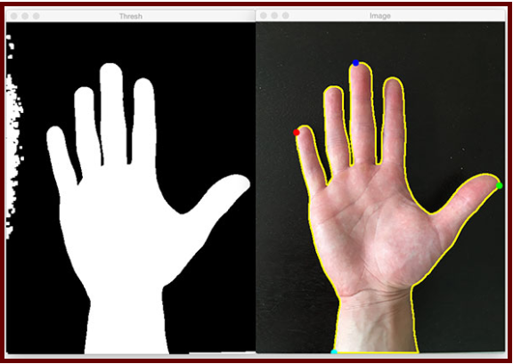
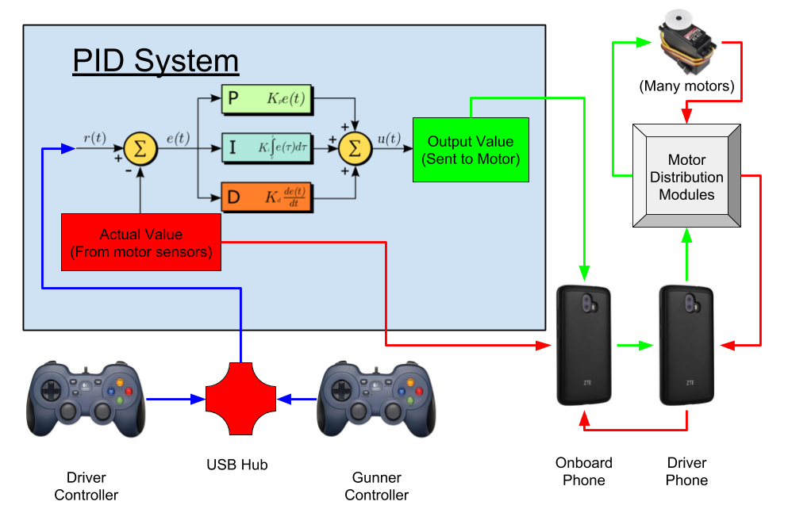

Our robot is divided into three basic components: the chassis, the mineral sweeper and the pivot arm. We begin the autonomous period latched to the lander. To land, the robot uses a hook attached to the pivot arm. A winch then lowers the robot to the ground. The pivot arm then slides out of the lander hook and can complete its autonomous tasks.
For the tele-op period, the robot has a mineral sweeper that extends two feet out into the crater. This uses a brush which spins and extends outwards to collect balls and blocks into a holding area. When the robot has collected 2 minerals, the drivers will retract the mineral sweeper. From here, the mineral sweeper is rotated back, sliding the minerals into the pivot arm head. The pivot arm then rotates up and drops the minerals back into the lander.
Programming
DriverFunction Class
Throughout the season, directly controlling each of our many motors became a hassle, making us work hard to get a simple outcome with our Mecanum wheel drivetrain, and not only that, but it also made our code harder to read and revise. For this reason, we decided to write the DriverFunction Class. It controls the drivetrain in a nice, objectified This prevents multiple instantiations of the motors across OpModes by instantiating them in itself, such that they are part of the object. Additionally, the class has many methods that allow for complex trigonometric maneuvers, such as strafing at any degree or radian measure from the forward direction, or pivoting around a point a set distance from the robot. This allows for precise movement during the autonomous period, as well as fine control for the drivers during TeleOp.
Mineral Detection with Computer Vision
Our auton team started off by working on computer vision. Computer vision is the process that allows us to work with and analyze images received from a camera mounted on the robot.
Working with OpenCV (a library of programming functions mainly aimed at real-time computer vision), we developed a way to detect the relative positions of the three minerals to knock over. Then, we spent a bit attempting to use OpenCV to figure out how to differentiate between the white spheres and yellow cubes.
Our first issue when implementing OpenCV was the color detection, our camera was outputting images in RGB, but the problem with that was that the Red Green Blue colorspace was very poor in its ability to differentiate the different colors. The solution was to use the Hue Saturation Value colorspace, otherwise known as HSV, when applying an HSV filter to get our desired values it output a black and white image in our code, where our desired color was the white. Using that black and white image we were able to find the contours and detect its shape. If the shape was spherical we knew it was the white mineral, else it was the cube, by also using the shape we double checked our color detection. Using OpenCV was an interesting challenge for using this year, figuring out this technology is really going to help us at later competitions and future seasons.

Autonomous Plan
When we began to think about our plan for the autonomous period and how to get the most points possible we decided to formulate a flow chart. By planning out our goals and the direct process we would be able to more clearly program the robot when the time came.
Tele-Op
Our tele-op team began by copying everything over from last year’s programming. With a nontrivial amount of deliberation, we figured out what everything was supposed to do. Then, we started trying to control the new motors specific to this year’s competition; the winch and winch-locking mechanism for lifting and landing, the two arms for manipulating the minerals, and so forth.
The Pivot Arm was one of our main focuses when we began to work on TeleOp, we had to get the arm to stay in a position using a PID system. Unfortunately, when we tried to use the default FTC system our arm oscillated violently, we attempted to figure how to adjust our values. Through thorough testing, we were able to find our values and input them into the PID system. Unfortunately, when we adjusted the PID values it caused new problems. Luck for us, when we attempted the default values, it finally worked.
TeleOp was programmed with the comfort and convenience of our driver and gunner at mind. We implemented several functions at their request. Our driver was having difficulty controlling the robot backwards, so we added a button to our gamepad that switched the front and back of the robot wheels.

Electrical
This section is currently under construction, please come back later!
Mechanical
Mineral Sweeper
The mineral sweeper was made in order to pick the minerals that are contained inside the craters in the corners of the field. A key aspect of this device is that it must be able to extend over the crater by itself. In other words, the robot would not need to partially or completely enter the crater in order for the minerals to be removed.
Our first decision to make was how the balls would be picked up from within the crater. In previous years we have tried using a shovel-like scoop method with some sort of bucket attached to an arm on a motor or servo. While the simplicity of this design is advantageous for maintenance, the speed and consistency at which objects can be picked up is unacceptable. In other years we have tried claw or clamp methods using a servo connected to one side of claw to squeeze an object. While this method does not drop the object as frequently as the scoop method, it requires a lot more maintenance and precision. The other major difficulty with a clamp method is the time it takes the driver and gunner to align and pick up a the given object. Learning from our previous mistakes, we decided to go with a sweeper method with some sort of flexible material attached to an axle which hits the object up and into a containment area.
The second major decision to make was what string-like material would be used on the axel. The key is that the material firm enough to push the mineral but not so strong that it cannot rap around the block. Also, if the material is much too firm the block can be thrown out of the container at high speeds posing a threat to both the robot and surrounding people. Our first thought was zip-ties because they are inexpensive and easy to attach to an axel. This quickly proved a suboptimal solution because the zip-ties did not provide enough resistance to move the minerals. After having a very flexible and light option we went to the other extreme and used a coiled plastic cable which had some flex but was very stiff especially compared to the weak zip-ties. These plastic pieces were throwing the blocks out and were clearly not going to work. our third and final solution was flexible rubber tubing which combined the perfect weight and flexibility to push the balls and cubes into the 3D printed containment area with out launching them out.
After these major decisions were made, our final design started to come to fruition. We mounted the axle to a gear which was connected to a servo via a chain. This sweeper pushes the minerals into a 3D printed containment area which directs the block into our main arm system. This system allows quick collection of two minerals with accuracy from the driver or gunner and without forcing the robot to climb over the crater walls.
At first our walls were made of cardboard and foam board which were light but also very flimsy so we quickly identified a need for improvement. Metal is much too heavy to be a viable solution do to the length the linear slide will be extending. At the maximum length.
Pivot Arm
The pivot arm of the robot performs the task of lifting the robot and moving minerals from the ground level to the lander. This was one of the first challenges we addressed, and it proved to be difficult. We started by brainstorming designs, including a scissor arm, an extender arm, and a swinging arm, which we eventually settled on. In order to move the minerals, the arm uses a tetrix motor with encoder feedback to rotate between the two set points. Additionally, the pivot arm uses a winch for lifting the robot on and off the lander. The winch is attached to the top of the pivot arm via a string. The winch pulls on the arm using this string. This uses a servo-operated locking mechanism, that keeps the robot from landing prematurely.
Originally, we were planning on the pivot arm directly lifting the robot with one motor, but it wasn’t strong enough. With the sting the winch was able to gain a greater mechanical advantage and was able to successfully lift the robot. We also had issues with the arm as it hit the rest of the robot, especially the motor of the front wheels. We changed the design so that it used a winch instead, which was much more effective. We also had problems with the pivot arm not fitting inside the size parameters, hitting the robot, or not being able to reach the lander, so we had to adjust the height, position and length of the arm multiple times.
Pivot Arm Head
The pivot arm head is attached to the end of the pivot arm and it is responsible for transferring the minerals from the sweeper into the lander. For our pivot arm head, we had a prototype that was made from aluminum parts, but ended up 3-D printing a new part. It uses a group of beams that support the two ends of the head, which makes it stronger, and can remain reliable after heavy use. The arm is attached to the lifting arm with an axle which allows the head of the arm to rotate up into position after launch. Surgical tubing connects the free end of the arm to the lifting arm. This tubing provides tension so that, when the robot lowers down off of the hook, the arm swings into the upright position and locks. The Pivot Arm locks into the upright position with a 3D printed part. Originally the lock took the form of a latching mechanism in which a metal beam fell into a cut notch in the axle. Tension was put onto the latch via a spring which ensured that the latch was constantly pushing against the axle. In the end this design had too many inconsistencies and had to be abandoned. The major issue was with the mounting of the latching mechanism; due to the positioning of the latch it was difficult to mount it properly without bending. The solution was to 3D-print a part which would allow a standoff to be locked inside of a set of jaws. This solution was far smaller in profile and therefore was comparatively simple to mount onto the robot arm.
This mechanism was necessary because of size limitations. With our original design we realized that the arm did not fit inside of the size restrictions when it was attached to the lander in the upright position. The issue was that the arm extended too far and did not fit in the allotted space. We could not, however, simply reduce the length of the robot arm itself because then the arm would not be tall enough to reach all the way up to the top of the lander in order to deliver the minerals. The pivot arm solves this problem by allowing the arm to fit within the size restrictions but then also extend to the necessary height after the robot lowers itself off of the launcher.
After creating this part we also encountered challenges with making it so that the minerals properly fell into the lander. The issue was that the balls would fly out of the head of the arm when the arm reached its apex. When this happened the balls and cubes would fall into the opponent’s containers. In order to solve this we employed two solutions. The first solution was to tip the head of the robot down. This helped because it prevented the balls from falling out of the robot head. Now, when the head reached the lander, it hit the top part of the lander and prevented the balls from falling out as much. This did not entirely fix the problem as the balls were prevented from exiting the head but sometimes the cubes still made it through the opening.
Because of this we implemented another solution; we decided to add a metal lip to the top side of the robot arm head. To do this we simply affixed a small bar of metal on either end to the top of the head (when it is in the up position). This addition served to further close the opening when the head contacted the lander at the top. This served to finally fix the problem of the balls and cubes falling into different locations on the lander than were intended. The lip prevented even the cubes from flying out of the head when it came into contact with the lander while delivering the balls and cubes.